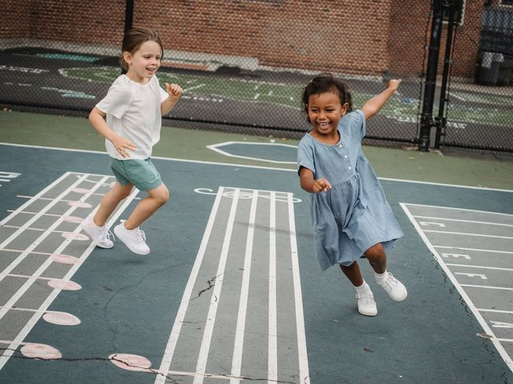
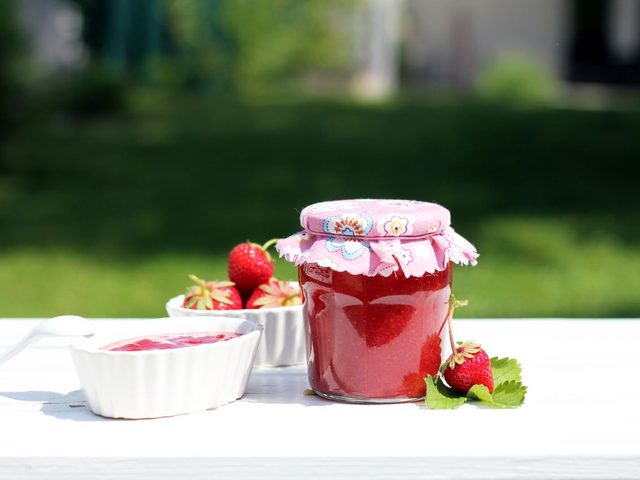
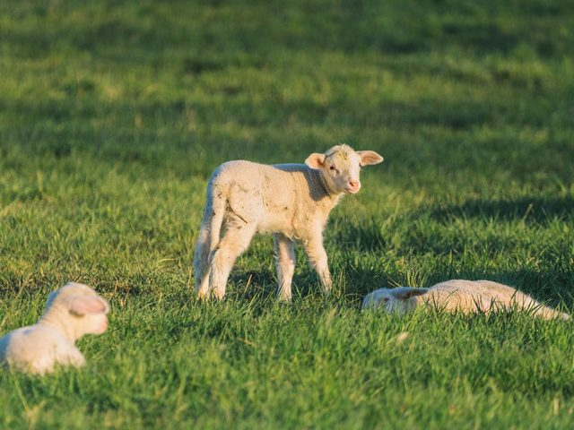

VOCABULARY · LALA WORD UNIT 18
A Day Off for Your Mind．一字多義（十八）
tire 是輪胎，也是「使疲倦」；tear 唸 [tɪr] 是眼淚，唸 [tɛr] 是「撕開」。這個單元有 5 個主題單字、16 個更多單字，是 LaLa Word 的最後一個單元。
共 21 個單字．點 🔊 聽發音
1tirev. / n.
使疲倦；輪胎
tire - tired - tired - tiring
- 1v.使疲倦 tire + 人 + out 使筋疲力盡；feel tired 覺得累The long walk tired me out.走了那麼久讓我累壞了。
- 2n.輪胎My bike has a flat tire.我的腳踏車爆胎了。

2guidev. / n.
引導；帶領；指南；嚮導；導遊
guide - guided - guided - guiding
- 1v.引導；帶領The teacher guided us through the museum.老師帶我們參觀博物館。
- 2n.指南This book is a guide to Japanese food.這本書是日本料理指南。
- 3n.嚮導；導遊Our tour guide speaks three languages.我們的導遊會說三種語言。

3beatv. / n.
打敗；打；拍打；攪拌；（心臟）跳動；心跳；節拍
beat - beat - beaten - beating
- 1v.打敗 beat the record 打破紀錄；It beats me. 我不知道Our class beat Class 3 in the final.我們班在決賽打敗了三班。
- 2v.打；拍打；攪拌 beat the drum 打鼓Beat the eggs and sugar together.把蛋和糖一起打勻。
- 3v.（心臟）跳動My heart was beating fast.我的心跳得很快。
- 4n.心跳 skip a beat 心跳漏一拍My heart skipped a beat when I saw the test score.看到考試分數時我心跳漏了一拍。
- 5n.節拍Clap your hands to the beat.跟著節拍拍手。

4staten.
情況；狀態；國家；政府；州
複數 states
- 1n.情況；狀態 in a state of 處於…的狀態The old house is in a bad state.那棟老房子狀況很差。
- 2n.國家；政府The state pays for the new railway.政府出資興建新鐵路。
- 3n.州 the States 美國Texas is a big state in the U.S.德州是美國很大的一州。
5tearn. / v.
眼淚；撕開；狂奔
tear - tore - torn - tearing
- 1n.眼淚 be in tears 哭了；（眼淚唸 [tɪr]）Tears ran down her face.眼淚從她的臉上流下來。
- 2v.撕開 （撕開唸 [tɛr]）tear apart 撕碎；be torn 內心掙扎Don't tear the paper.不要撕紙。
- 3v.狂奔The kids tore out of the classroom at lunchtime.午餐時間孩子們衝出教室。

6activeadj.
活躍的；積極參與的；（火山）活的
active - more active - most active
- 1adj.活躍的 stay active 保持活躍My grandma is still very active.我奶奶還是很活躍。
- 2adj.積極參與的 play an active role in 在…扮演積極的角色She is active in the student council.她積極參與學生會。
- 3adj.（火山）活的This is an active volcano.這是一座活火山。
7basen. / v.
基地；底部；基座；壘（棒球）；以…為根據
base - based - based - basing
- 1n.基地The climbers returned to their base.登山者回到基地。
- 2n.底部；基座The lamp has a heavy base.這盞燈的底座很重。
- 3n.壘（棒球）He ran to second base.他跑上二壘。
- 4v.以…為根據 be based on 以…為根據This movie is based on a true story.這部電影是根據真實故事改編的。

8beautyn.
美人；美麗
複數 beauties
- 1n.美人She was a beauty when she was young.她年輕時是個美人。
- 2n.美麗 Beauty is only skin deep. 美貌只是外表We enjoyed the beauty of the mountains.我們欣賞山的美景。
9chargev. / n.
收費；費用；充電；猛衝；控訴；罪名；負責
charge - charged - charged - charging
- 1v.收費The shop charged me 100 dollars.這家店向我收了一百元。
- 2n.費用There is no charge for kids under six.六歲以下兒童免費。
- 3v.充電I need to charge my phone.我要幫手機充電。
- 4v.猛衝The dog charged at the ball.狗朝球衝過去。
- 5n.控訴；罪名He faces a charge of stealing.他被控偷竊。
- 6n.負責 in charge of 負責；take charge of 掌管Who is in charge of this class?誰負責這個班？

10crowdn. / v.
一群人；人群；擠滿；擠進
crowd - crowded - crowded - crowding
- 1n.一群人；人群There was a big crowd at the concert.演唱會上人山人海。
- 2v.擠滿 be crowded with 擠滿The night market is crowded with people.夜市擠滿了人。
- 3v.擠進We all crowded into the small elevator.我們全都擠進小電梯。

11flatadj. / n.
平的；扁平的；固定的（價錢）；平淡無趣的；沒氣的；沒電的；（音）偏低的；斷然的；沒有成長的；公寓（英式）
flat - flatter - flattest
- 1adj.平的；扁平的The road is flat and easy to ride on.這條路很平，很好騎。
- 2adj.固定的（價錢）The taxi charges a flat fee to the airport.計程車到機場收固定的費用。
- 3adj.平淡無趣的The ending of the movie was a bit flat.電影的結局有點平淡。
- 4adj.沒氣的；沒電的 flat tire 爆胎This soda has gone flat.這罐汽水沒氣了。
- 5adj.（音）偏低的He sang a little flat.他唱得有點走音偏低。
- 6adj.斷然的She gave me a flat "no."她斷然拒絕我。
- 7adj.沒有成長的Sales have been flat this year.今年的銷售量沒有成長。
- 8n.公寓（英式）They live in a small flat in London.他們住在倫敦的一間小公寓。

12halln.
大廳；禮堂；走廊
複數 halls
- 1n.大廳；禮堂 concert hall 音樂廳The graduation was held in the school hall.畢業典禮在學校禮堂舉行。
- 2n.走廊Don't run in the hall.不要在走廊奔跑。

13jamn. / v.
果醬；塞車；堵塞；卡住；塞滿
jam - jammed - jammed - jamming
- 1n.果醬I like strawberry jam on my toast.我喜歡在吐司上抹草莓果醬。
- 2n.塞車 traffic jam 塞車We were stuck in a traffic jam.我們被困在車陣中。
- 3n.堵塞There is a paper jam in the printer.印表機卡紙了。
- 4v.卡住The door is jammed.門卡住了。
- 5v.塞滿She jammed her clothes into the bag.她把衣服硬塞進包包裡。
14judgen. / v.
法官；評審；判斷；批評
judge - judged - judged - judging
- 1n.法官；評審She was a judge in the singing contest.她是歌唱比賽的評審。
- 2v.判斷 judge by 根據…判斷Don't judge people by their looks.不要以貌取人。
- 3v.批評Please don't judge me.請不要批評我。

15lambn. / v.
小羊；羊肉；生小羊
複數 lambs
- 1n.小羊；羊肉The little lamb is very cute.小羊好可愛。
- 2v.生小羊The sheep lamb in spring.母羊在春天生小羊。

16modeln.
模特兒；模型；榜樣；（車、手機）款式
複數 models
- 1n.模特兒She works as a model.她當模特兒。
- 2n.模型My brother built a model plane.我哥哥做了一架模型飛機。
- 3n.榜樣 role model 榜樣My mom is my role model.我媽媽是我的榜樣。
- 4n.（車、手機）款式This is the newest model of the phone.這是這支手機的最新款。

17nutn.
堅果；螺帽；怪人；迷；熱衷者
複數 nuts
- 1n.堅果Nuts are good for your health.堅果對健康很好。
- 2n.螺帽Tighten the nut with a wrench.用扳手把螺帽鎖緊。
- 3n.怪人He dances like a nut.他跳舞像個瘋子一樣。
- 4n.迷；熱衷者My dad is a baseball nut.我爸爸是個棒球迷。

18patientn. / adj.
病人；有耐心的
patient - more patient - most patient
- 1n.病人The doctor saw thirty patients today.醫生今天看了三十個病人。
- 2adj.有耐心的 be patient with 對…有耐心Be patient with your little brother.對你弟弟要有耐心。
19sheetn.
床單；一張（紙）；薄片；薄層
複數 sheets
- 1n.床單Let's change the sheets today.我們今天換床單吧。
- 2n.一張（紙） a sheet of paper 一張紙Write your name on the answer sheet.在答案紙上寫你的名字。
- 3n.薄片；薄層There is a sheet of ice on the lake.湖面上結了一層薄冰。

20shootv. / n.
射擊；射（箭）；注射；投籃；射門；快速上升；拍攝活動；新芽
shoot - shot - shot - shooting
- 1v.射擊；射（箭）He shot an arrow at the target.他朝靶子射了一支箭。
- 2v.注射The nurse shot the medicine into my arm.護理師把藥打進我的手臂。
- 3v.投籃；射門Let's go shoot some hoops.我們去投籃吧。
- 4v.快速上升 shoot up 暴漲Prices shot up last month.上個月物價暴漲。
- 5n.拍攝活動The model is ready for the photo shoot.模特兒準備好拍照了。
- 6n.新芽 bamboo shoot 竹筍Bamboo shoots grow fast after rain.雨後竹筍長得很快。

21wildn. / adj.
荒野；野外；野生的；瘋狂的；荒涼的
wild - wilder - wildest
- 1n.荒野；野外 in the wild 在野外Lions live in the wild.獅子生活在野外。
- 2adj.野生的We saw wild monkeys on the mountain.我們在山上看到野生猴子。
- 3adj.瘋狂的The fans went wild when the singer came out.歌手出場時粉絲瘋狂了。
- 4adj.荒涼的They hiked across the wild land.他們徒步穿越荒涼的土地。
FOCUS
一字多義：最常見 vs. 容易忽略的意思
| 單字 | 最常見的意思 | 容易忽略的意思 |
|---|---|---|
| tire | 輪胎 | 使疲倦（tired 累的） |
| beat | 打敗 | 心跳；節拍 |
| state | 狀態 | 州；國家 |
| tear | 眼淚 [tɪr] | 撕開 [tɛr] |
| charge | 收費 | 充電；負責 |
| flat | 平的 | 爆胎；公寓；沒氣的 |
| jam | 果醬 | 塞車；卡住 |
| nut | 堅果 | 螺帽；迷 |
| patient | 有耐心的 | 病人 |
| shoot | 射擊 | 投籃；竹筍；拍攝 |
FOCUS
常用片語
| 片語 | 意思 | 例句 |
|---|---|---|
| tire + 人 + out | 使筋疲力盡 | The game tired me out. |
| be based on | 以…為根據 | The book is based on a true story. |
| in charge of | 負責 | She is in charge of the party. |
| be crowded with | 擠滿 | The beach is crowded with people. |
| traffic jam | 塞車 | We were late because of a traffic jam. |
| be patient with | 對…有耐心 | Be patient with the new students. |
| in the wild | 在野外 | Pandas live in the wild in China. |